Onze critérios de aceite (CA01–CA11, mais os desdobramentos CA03b e CA06b) demonstrados em três camadas: payloads reais do pre-check (payloads/*.json, gerados por harness Pest com mascaramento na gravação), suíte automatizada (245 testes Siap na api + 1429 no client, incluindo os testes dedicados de cada CA) e capturas do client dirigido no navegador para as zonas visíveis. A HU fechou três lacunas (RN03 subject_label, RN04 atalho completo, RN10 Operacional) e corrigiu dois defeitos no caminho: o cartão da pendência de profissional que apontava os Parâmetros TCE/AL (bug §1.2 da spec, o 'antes' está no dossiê da #10529) e o 404 do atalho — inclusive o residual da Zona B, onde o mesmo 404 sobrevivia na lista por leiaute (commits f0cac17 + 733bb67). O follow-up aberto pela #10529 sobre o SiapBlockingIssueCallout está FECHADO.
| CA | Critério | Status |
|---|---|---|
| CA01 | Conferência sem pendências — geração liberada | ATENDIDO · automatizado |
| CA02 | Pendência impeditiva com o NOME da unidade e o campo (RN03 — a lacuna central) | ATENDIDO · navegador + automatizado |
| CA03 | Atalho leva à FICHA da entidade, não à listagem (D05) | ATENDIDO · navegador + automatizado |
| CA03b | Atalho da pendência de profissional — o bug §1.2 corrigido em TRÊS camadas | ATENDIDO · navegador + automatizado |
| CA04 | Pendência de organização (CARDUG) em destaque, separada — e as demais completas | ATENDIDO · navegador + automatizado |
| CA05 | Código de domínio sem correspondência → Painel Global, sem atalho de tenant | ATENDIDO · navegador + automatizado |
| CA06 | Pendência informativa não bloqueia (aviso da Folha de Pagamento) | ATENDIDO · navegador + automatizado |
| CA06b | Vínculo de prestação de serviço vazio é impeditivo (US-SIAP-08) | ATENDIDO · automatizado |
| CA07 | Correção some na conferência seguinte (RN08 — sem materialização) | ATENDIDO · automatizado |
| CA08 | A conferência não altera cadastro nenhum (RN07 — leitura pura) | ATENDIDO · automatizado |
| CA09 | Isolamento entre municípios | ATENDIDO · automatizado |
| CA10 | Operacional consulta a conferência e NÃO vê a ação de gerar (RN10) — com nota sobre o acesso ao histórico | ATENDIDO · navegador + automatizado |
| CA11 | LGPD: o nome não é persistido (D03) — schema E linha gravada | ATENDIDO · automatizado |
Critério (Gherkin): Dado que sou Master, o CARDUG está informado com 6 dígitos E todos os registros de 08/2026 têm os campos obrigatórios preenchidos, quando eu solicitar a conferência de 08/2026, então blocking.can_generate é true, blocking.pendencies é vazio e a ação de gerar a remessa fica disponível.
Como foi testado: Harness Pest semeia CARDUG 004821, unidade e entidade completas e chama GET /siap-remittances/pre-check?exercise=2026&reference_month=8. Payload íntegro em payloads/CA01-happy-path.json. Teste dedicado: releases the generation when every record is complete (CA01 da #10530).
Evidência por cobertura automatizada — ver Anexo.
Critério (Gherkin): Dado que a unidade 'CRAS Centro' está sem número MDS, quando eu solicitar a conferência de 08/2026, então a pendência aparece em layouts[UnidadeSocial].pendencies, subject_label é 'CRAS Centro', field_name é 'NumeroMDS', blocks_entire_remittance é true e blocking.can_generate é false.
Como foi testado: Payload em payloads/CA02-unidade-sem-mds.json: a mesma pendência aparece na zona de bloqueio E na lista do leiaute (promoção D08 da #10370), com subject_label nas duas visões. No navegador, a conferência exibe 'Registro: CRAS Centro · Campo: NumeroMDS' no cartão. Testes: names the unit without MDS number by its own name (CA02/RN03).
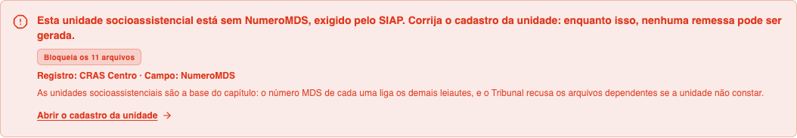
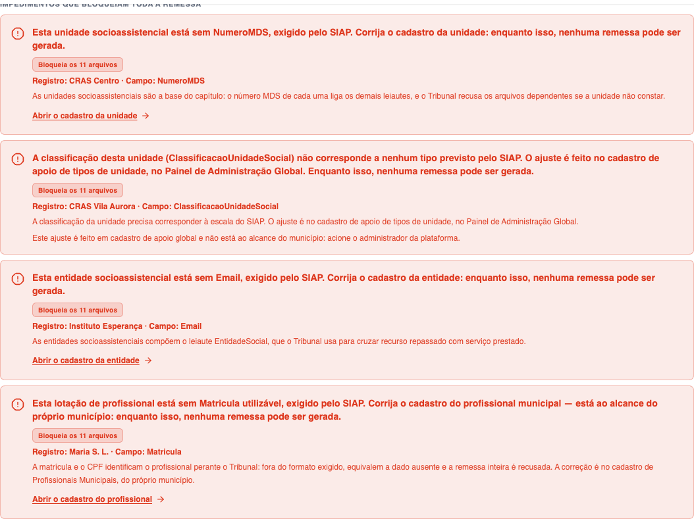
Critério (Gherkin): Dado que existe pendência impeditiva na entidade 'Instituto Esperança' por falta de e-mail, quando eu acionar o atalho da pendência, então sou levado à ficha DESSA entidade (social-entities-detail, param = subject_uuid) e não à listagem de entidades.
Como foi testado: Payload em payloads/CA03-entidade-sem-email.json: resolution = {scope: tenant, resource: social-entities, subject_uuid: uuid-da-entidade}. O SiapPendencyLink monta social-entities-detail com esse uuid (mapa DETAIL_ROUTES). Testes: CA03 (D05): leva à ficha DESSA entidade, não à listagem (client) + carries the subject_uuid inside the resolution (RN04) (api).
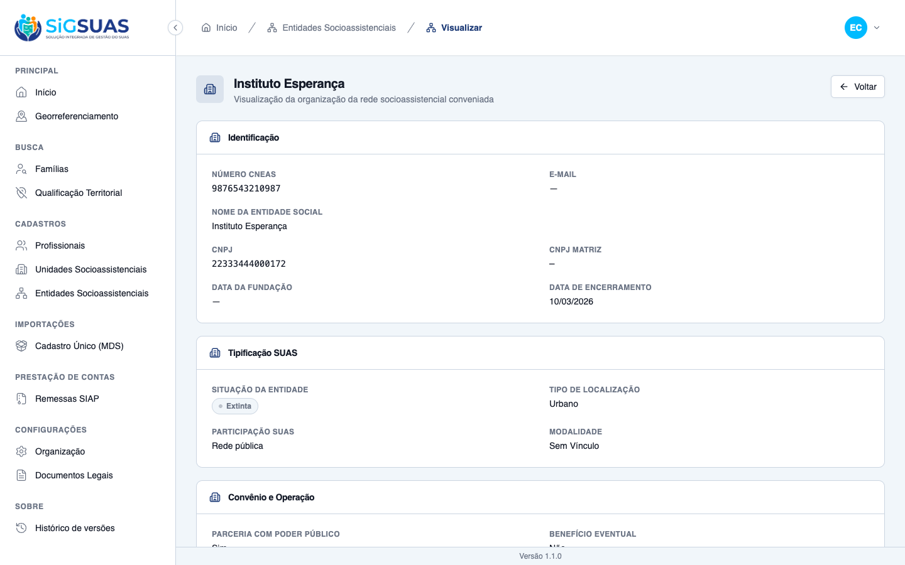
Critério (Gherkin): Dado que existe pendência impeditiva de matrícula em profissional municipal, quando a conferência for exibida, então o cartão oferece atalho para professionals-municipais-detail e NÃO exibe 'Solicite a correção nos Parâmetros TCE/AL'.
Como foi testado: TRÊS camadas de evidência, uma por commit: (1) o cartão aponta o cadastro certo — resolution.resource = tenant-professionals com redação própria, sem o texto do CARDUG (client 8abc773); (2) a ficha realmente ABRE — resolution.subject_uuid é o uuid do PROFISSIONAL, e GET /professionals/{uuid} responde 200, enquanto o uuid da LOTAÇÃO (o subject_uuid da pendência) responde 404 (api fdb1617); (3) o MESMO atalho funciona na Zona B — a lista por leiaute serve resolution idêntico ao da zona de bloqueio (api f0cac17 + client 733bb67, o residual da 02b). Payload com as três provas em payloads/CA03b-atalho-profissional.json. O 'antes' do bug está preservado no dossiê da #10529 (primeira imagem abaixo): o cartão da pendência de matrícula mandava o município aos Parâmetros TCE/AL.
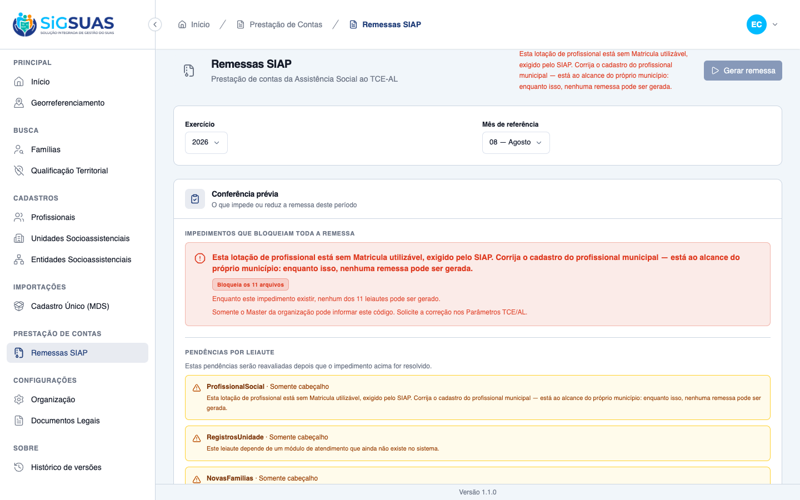
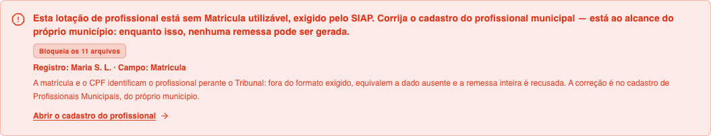
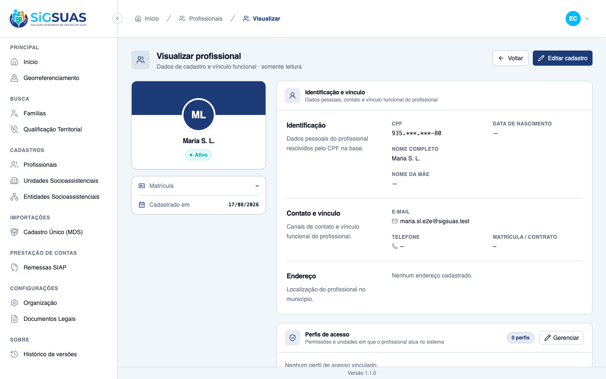
Critério (Gherkin): Dado que o CARDUG não está informado, quando eu solicitar a conferência de qualquer referência, então a pendência sai em blocking.pendencies, fora de layouts, blocks_entire_remittance é true e as pendências por leiaute continuam sendo devolvidas completas.
Como foi testado: Payload em payloads/CA04-cardug-ausente.json: kind cardug_identifier_missing só em blocking.pendencies (nenhum layout o contém — separação estrutural da #10367), sem sujeito (subject_label: null), e a unidade sem MDS segue listada no leiaute dela. Teste: keeps the CARDUG pendency without subject_label and outside the layouts (CA04).
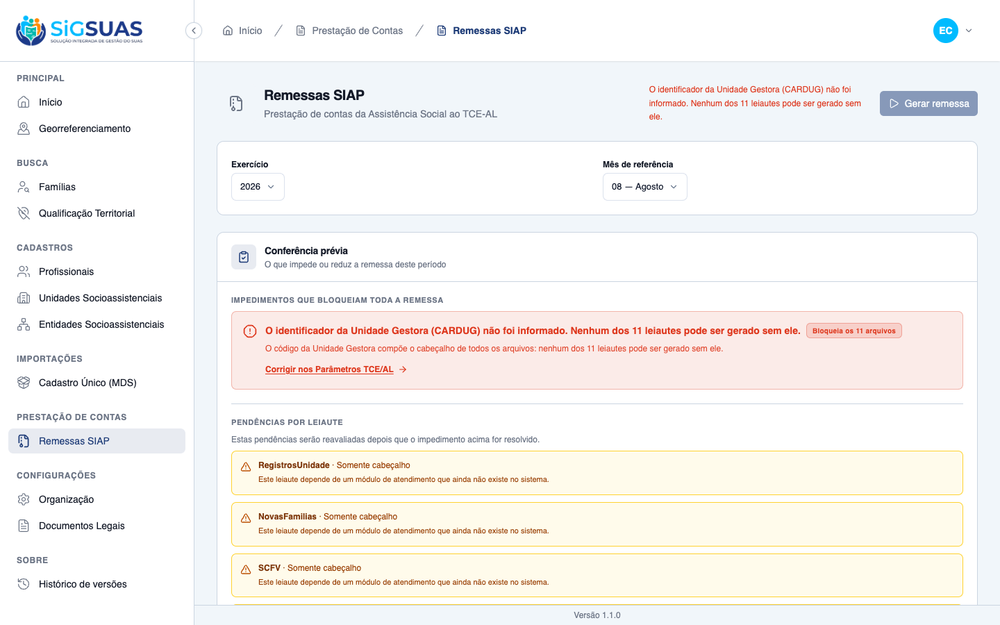
Critério (Gherkin): Dado que uma unidade tem tipo cujo código não corresponde a nenhuma classificação do Manual, quando eu solicitar a conferência, então há pendência de domínio indicando a unidade e 'Classificação da Unidade Social', resolution.scope é 'global' e a orientação aponta o Painel de Administração Global, sem atalho.
Como foi testado: Payload em payloads/CA05-dominio-fora-escala.json: unidade com tipo de código 888 (fora da escala) → pendência message_key = unit_type_unmapped, campo ClassificacaoUnidadeSocial, resolution.scope = global e a mensagem pt-BR citando o Painel de Administração Global. Nota de contrato: no leiaute UnidadeSocial o kind segue record_incomplete; a natureza 'domínio sem correspondência' é expressa pelo message_key e pelo escopo global (contrato validado na etapa 01). Teste: marks the unmapped domain code resolution as global, without a tenant shortcut (CA05).
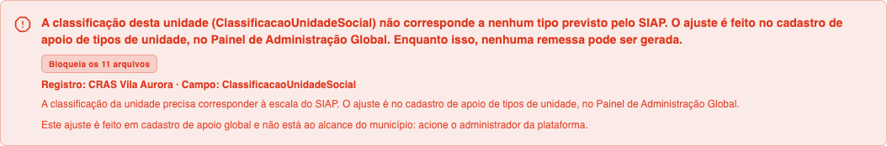
Critério (Gherkin): Dado que a única pendência de 08/2026 é o aviso da Folha de Pagamento, quando eu solicitar a conferência, então scope é 'informative' e blocking.can_generate é true.
Como foi testado: Payload em payloads/CA06-informativa-folha.json: profissional completo lotado → única pendência é payroll_cross_reference (informativa, sem sujeito) e can_generate = true. Teste: keeps the generation available when the only pendency is informative (CA06 da #10530).
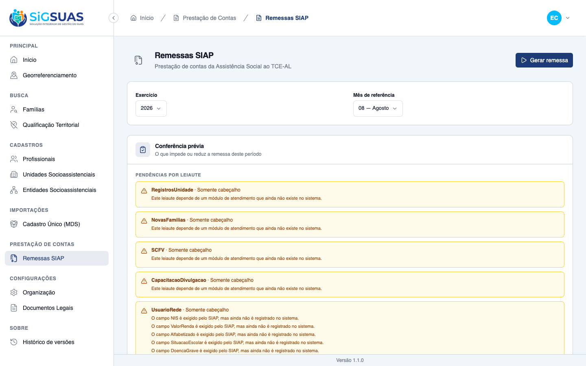
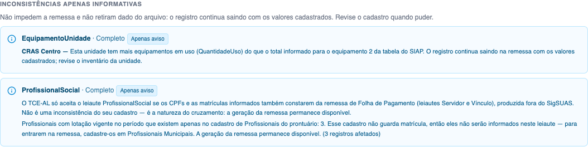
Critério (Gherkin): Dado que 'Instituto Esperança' está com o vínculo de prestação de serviço vazio, quando eu solicitar a conferência de 08/2026, então a pendência aparece em layouts[EntidadeSocial].pendencies e é impeditiva.
Como foi testado: Payload em payloads/CA06b-entidade-sem-vinculo.json (mesmo tenant do CA06 — o contraste informativa × impeditiva no mesmo cenário): entidade com has_active_service_agreement = null → pendência SituacaoUnidade no leiaute EntidadeSocial E na zona de bloqueio, can_generate vira false. Teste: names the entity whose service agreement was never informed.
Evidência por cobertura automatizada — ver Anexo.
Critério (Gherkin): Dado que corrigi o número MDS de 'CRAS Centro', quando eu solicitar a conferência da mesma referência, então aquela pendência não aparece e as demais continuam listadas.
Como foi testado: Payload duplo em payloads/CA07-antes-depois-da-correcao.json: ANTES, CRAS Centro e CRAS Ponta Verde pendentes; corrigido o NumeroMDS do CRAS Centro, a conferência SEGUINTE da mesma referência não o lista — e o CRAS Ponta Verde permanece. Teste: drops only the fixed pendency on the next pre-check (CA07/RN08). Qualquer cache do resultado quebraria os dois.
Evidência por cobertura automatizada — ver Anexo.
Critério (Gherkin): Dado que existem 12 registros com campo obrigatório em falta, quando eu solicitar a conferência, então nenhum registro é alterado, excluído ou preenchido e activity_log não registra modificação decorrente da conferência.
Como foi testado: Evidência em payloads/CA08-leitura-pura.json: 12 unidades incompletas reportadas; atributos de TODAS idênticos antes/depois (comparação registro a registro), activity_log com a MESMA contagem, zero linhas em siap_remittances/siap_remittance_pendencies. Teste: changes nothing and logs nothing while reporting 12 incomplete records (CA08/RN07).
Evidência por cobertura automatizada — ver Anexo.
Critério (Gherkin): Dado que sou usuário do município A, quando eu solicitar a conferência, então só unidades, entidades e profissionais de A são considerados.
Como foi testado: Evidência em payloads/CA09-isolamento.json: municípios A e B semeados, ambos com unidade pendente; a conferência de A lista o CRAS Centro e o payload NÃO contém nem o uuid nem o nome da unidade de B (busca literal sobre a resposta crua). A D02 exigiu ir além do isolamento de REGISTROS: o resolver de rótulos também é escopado — o nome do vizinho não vaza pela resolução em lote. Testes: never leaks another tenant records or labels into the pre-check (CA09) + suíte tests/Feature/TenantIsolation.
Evidência por cobertura automatizada — ver Anexo.
Critério (Gherkin): Dado que sou Operacional do Tenant, quando eu solicitar a conferência, então recebo 200 com o mesmo payload do Master e a ação de gerar a remessa NÃO fica disponível para mim.
Como foi testado: Payload em payloads/CA10-operacional.json: autenticado como CLIENT_OPERADOR, o pre-check responde 200 com a MESMA estrutura (subject_label incluso). O papel tem siap-remittances.pre-check (mecanismo OPERATOR_GRANTED_PERMISSIONS da etapa 01) e NÃO tem store nem index. No client, o gate da rota virou OR (index OU pre-check, etapa 02b) — o Operacional alcança a tela, vê o painel e o seletor de período, sem o botão de gerar e sem o histórico. No navegador: login como operador (CPF de teste 390.***.***-05) e captura da tela sem a ação. Testes: lets the tenant Operacional run the pre-check without unlocking the generation (CA10/RN10) (api) + CA10/CA10b em RemessasSiapPage.test.ts e guards.test.ts (client).
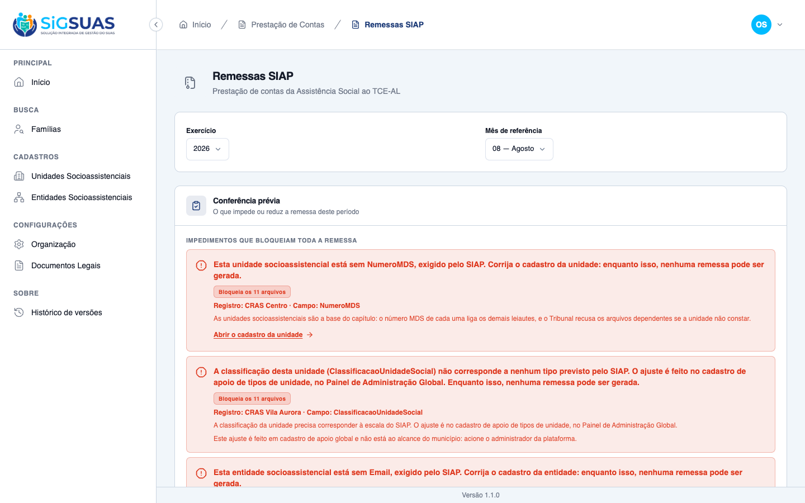
Critério (Gherkin): Dado que a conferência apontou pendência com subject_label preenchido, quando a remessa for gerada, então siap_remittance_pendencies grava subject_uuid e NÃO grava o nome, e nenhum log ou exceção contém o nome.
Como foi testado: Evidência dupla em payloads/CA11-linha-persistida-sem-nome.json: (1) SCHEMA — a lista real de colunas de siap_remittance_pendencies, sem subject_label/subject_name; (2) LINHA — a pendência congelada pela geração, atributo a atributo: só subject_uuid identifica o registro, 'CRAS Centro' não aparece em nenhum campo. Complemento D04 em payloads/D04-nome-fora-de-log-e-422.json: a recusa 422 informa QUANTIDADE (nunca identidade), activity_log sem linha nova e nenhuma mensagem de log de aplicação (listener MessageLogged) carrega o nome. Testes: persists the pendency by subject_uuid only, never by name (CA11/D03) + keeps the name out of the 422 payload, the activity log and the app log (D04).
Evidência por cobertura automatizada — ver Anexo.
A cobertura extra do CA10 registrava que o perfil Operacional também não enxergava o histórico de remessas já geradas. Aquela era a leitura desta entrega: consultar o histórico pareceu ato de gestão.
A história seguinte do épico decidiu o oposto e ampliou o acesso do Operacional, que hoje consulta o histórico e baixa os pacotes já gerados. Conferido no ambiente em 18/08/2026. A geração da remessa segue exclusiva do Master.
Isso não afeta nenhum critério deste chamado: o que se pediu aqui é que o Operacional consultasse a conferência e não visse a ação de gerar, e isso continua valendo. O registro fica para que a leitura do dossiê não induza a erro sobre o que vale hoje.
Vários dossiês do épico registraram, como achado, que a conferência prévia não identificava o registro pendente e que o cartão de impedimento oferecia orientação e atalho de outra pendência — em um caso, mandando o operador ao cadastro errado.
Foi esta entrega que fechou essas lacunas: a conferência passou a identificar o registro pelo nome com que o usuário o reconhece, e cada pendência passou a apontar o caminho de correção do próprio recurso. Por isso as evidências de tela das histórias anteriores precisaram ser recapturadas — elas retratavam o comportamento de antes desta correção.
PASS Tests\Unit\Services\Siap\SiapDomainMapTest
✓ it inverts Parda and Amarela between the eSUAS and SIAP scales 0.01s
✓ it keeps the race colors that coincide in both scales
✓ it returns null for a race color without counterpart
✓ it maps social unit types to the SIAP classification
✓ it refuses to translate a unit status the SIAP does not define
✓ it derives the extinction status from the end date against the exer… 0.01s
✓ it lets the derivation win over the code chosen in the lookup (D04)
✓ it turns an extinct unit without a usable end date into a pendency (D05)
✓ it ignores the end date for statuses that are not extinction
✓ it only translates the entity status that has a safe counterpart
✓ it translates the paralysed entity added by the HU #10371 (CA05d)
✓ it derives the entity extinction status from the end date against the exercise (RN08)
✓ it turns an extinct entity without a usable end date into a pendency (D08)
✓ it keeps the four original cadastral statuses out of the SIAP scale (CA05e / D03)
✓ it ignores the end date for the entity in activity
✓ it collapses the four SUAS participation types into the three of SIAP
✓ it maps the contract modality to the SIAP scale (HU #10369 / D06)
✓ it refuses to translate a contract modality outside the SIAP scale
✓ it maps kinship to the family position scale
✓ it leaves the ambiguous education level unmapped
✓ it maps booleans to the SIM/NAO pair
✓ it strips the zero padding only for the auxiliary tables
✓ it maps the 14 equipment types of the SIAP Table 35 (RN04)
✓ it refuses an equipment code outside the SIAP Table 35 (RN04)
✓ it keeps paddedCode permissive where unitEquipment is strict (D09)
✓ it maps the 21 structures of the SIAP Table 36 (RN04)
✓ it refuses a structure code outside the SIAP Table 36 (RN04)
✓ it keeps paddedCode permissive where unitStructure is strict (D04)
✓ it refuses a numeric value with a size different from the exact one
✓ it never sanitizes a non numeric value to make it fit
✓ it flags truncation instead of cutting text in silence
✓ it formats dates in ISO and decimals with two places
✓ it registers exactly the 11 layouts of the SIAP social assistance section
✓ it puts UnidadeSocial first, since 8 other layouts depend on it
✓ it names every file after its layout, as the Manual requires
PASS Tests\Unit\Siap\SiapSubjectLabelResolverTest
✓ it resolves the three tenant subject types in one query each (R2) 0.42s
✓ it dedupes repeated subject uuids before querying 0.01s
✓ it ignores an unknown subject type without breaking 0.01s
✓ it leaves an orphan uuid out of the map instead of failing 0.01s
✓ it leaves a soft deleted record out of the map 0.01s
✓ it never resolves a label that belongs to another tenant (CA09) 0.01s
PASS Tests\Feature\Api\SiapRemittanceGenerationTest
✓ it refuses the generation when the identifier is missing (CA06) 0.05s
✓ it refuses the generation for a legacy identifier outside the TCE-A… 0.02s
✓ it creates the remittance and dispatches the job when the identifie… 0.03s
✓ it generates a zip with all 11 layouts, including the ones without… 0.03s
✓ it emits the service agreement and the operating status as independ… 0.04s
✓ it emits the informed service agreement as SIM (CA08b) 0.03s
✓ it refuses the generation when the service agreement was never info… 0.02s
✓ it emits the unit address in the Manual order, with street number a… 0.04s
✓ it brings every unit of the municipality with the seven fields of t… 0.04s
✓ it keeps the paralysed unit inside the remittance (CA02) 0.03s
✓ it emits the unit extinct within the reference exercise as 3 (CA03) 0.04s
✓ it emits the unit extinct in a previous exercise as 4 (CA04) 0.03s
✓ it lets the end date override the status code chosen in the lookup… 0.04s
✓ it turns the extinct unit without a usable end date into a blocking… 0.03s
✓ it blocks the remittance while an inactive unit has no SIAP counter… 0.02s
✓ it translates the unit classification to the SIAP domain (CA05) 0.04s
✓ it suppresses the reference point first and keeps the complement (C… 0.03s
✓ it also suppresses the complement when the reference point is not e… 0.04s
✓ it never lets the address exceed 255 characters, not even in the wo… 0.03s
✓ it delivers the layout with the header only when there is no unit (… 0.03s
✓ it contains exclusively the units of my municipality (CA11) 0.04s
✓ it leaves the soft-deleted unit out of the remittance 0.03s
✓ it records the layout outcome of a layout without movement 0.03s
✓ it re-evaluates the block inside the job (TOCTOU) 0.02s
✓ it refuses the generation when a unit has no MDS number (CA07) 0.02s
✓ it refuses the generation when the unit classification is outside t… 0.02s
✓ it refuses the generation when the unit address has no postal code… 0.02s
✓ it counts municipalities, not fields: one unit missing two values i… 0.02s
✓ it keeps the unit block with its own message alongside the new enti… 0.02s
✓ it re-evaluates the unit block inside the job (D07/TOCTOU) 0.03s
✓ it refuses a second generation while one is still running 0.02s
✓ it never lists or downloads a remittance from another tenant 0.02s
✓ it refuses the download while the remittance is not completed 0.02s
✓ it brings every entity of the municipality with the seventeen field… 0.04s
✓ it keeps the entity without foundation date and head office CNPJ in… 0.03s
✓ it emits the declared service agreement regardless of the contract… 0.04s
✓ it emits the yes or no indicators as 1 and 2 (CA04) 0.03s
✓ it emits the entity extinct within the reference exercise as 3 (CA0… 0.04s
✓ it emits the entity extinct in a previous exercise as 4 (CA05b) 0.03s
✓ it turns the extinct entity without a usable end date into a blocki… 0.03s
✓ it emits the paralysed entity as 2 (CA05d) 0.04s
✓ it keeps the cadastral statuses without a SIAP counterpart as block… 0.03s
✓ it emits the contract amount with two decimal places and a dot sepa… 0.04s
✓ it delivers the entity layout with the header only when there is no… 0.03s
✓ it contains exclusively the entities of my municipality (CA11) 0.04s
✓ it keeps the soft deleted entity out of the file (RN01 — regressão) 0.03s
✓ it emits the entity address in the Manual order, ending with the mu… 0.03s
✓ it suppresses the entity reference point first and keeps the comple… 0.04s
✓ it also suppresses the entity complement when the reference point i… 0.03s
✓ it never lets the entity address exceed 255 characters, not even in… 0.04s
✓ it refuses the generation when an entity has no CNEAS number (CA06) 0.03s
✓ it refuses the generation when an entity has no e-mail (CA07) 0.02s
✓ it refuses the generation when an entity has no contract amount (CA… 0.03s
✓ it does not block the remittance when the contract amount is zero (… 0.03s
✓ it counts entities, not fields: one entity missing two values is on… 0.02s
✓ it evaluates the CARDUG before the entity records 0.02s
✓ it re-evaluates the entity block inside the job (TOCTOU) 0.02s
✓ it generates the remittance when every entity and unit is complete 0.04s
✓ it never carries the entity name, CNPJ or e-mail into the entity bl… 0.02s
✓ it brings the inventory of every unit into the layout (CA01) 0.04s
✓ it consolidates distinct purchases of the same equipment into one r… 0.04s
✓ it emits the equipment without a purchase date and reports nothing… 0.03s
✓ it keeps the only informed purchase date after consolidating (CA04) 0.04s
✓ it keeps the row in the file when the in-use quantity exceeds the t… 0.03s
✓ it omits the equipment with zero total quantity, without any penden… 0.03s
✓ it omits the zeroed row but still reports the contradiction (CA07b) 0.04s
✓ it reports nothing for a unit without any equipment (CA08) 0.04s
✓ it delivers the layout with header only when no unit has equipment… 0.04s
✓ it contains exclusively the equipment of my municipality (CA10) 0.04s
✓ it keeps emitting an equipment type that was deactivated in the glo… 0.03s
✓ it refuses the generation when an equipment code is outside Table 3… 0.03s
✓ it refuses the generation for a non numeric equipment code (CA05b) 0.02s
✓ it points the equipment refusal to the Global Administration Panel… 0.02s
✓ it counts equipment codes, not links: the same code in two units is… 0.02s
✓ it does not block a municipality for an invalid code it does not us… 0.03s
✓ it keeps the inventory contradiction informative after the block (D… 0.04s
✓ it re-evaluates the equipment block inside the job (TOCTOU) 0.02s
✓ it evaluates the CARDUG, the unit and the entity before the equipme… 0.03s
✓ it keeps the unit and entity blocks with their own messages (não-re… 0.02s
✓ it generates the remittance when every equipment code is inside Tab… 0.04s
✓ it brings every structure of every unit into the layout (CA01) 0.04s
✓ it refuses the generation when a structure code is outside Table 36… 0.03s
✓ it refuses the generation when a structure code is outside Table 36… 0.02s
✓ it refuses the generation when a structure code is outside Table 36… 0.02s
✓ it refuses the generation for a non numeric structure code (CA02b) 0.03s
✓ it never drops a linked structure in silence anymore (RN04d) 0.02s
✓ it offers the two ways out in the structure refusal (CA03c) 0.02s
✓ it counts structure codes, not links: the same code in two units is… 0.02s
✓ it keeps emitting a structure whose lookup item was deactivated (CA… 0.04s
✓ it does not filter out a school-profile structure (CA03b) 0.03s
✓ it reports nothing for a unit without any structure (CA04) 0.04s
✓ it delivers the layout with header only when no unit has a structur… 0.03s
✓ it contains exclusively the structures of my municipality (CA06) 0.04s
✓ it does not block a municipality for a structure code it does not u… 0.04s
✓ it re-evaluates the structure block inside the job (TOCTOU) 0.03s
✓ it evaluates the professional block last, after the structure one 0.04s
✓ it generates the remittance when every structure code is inside Tab… 0.04s
✓ it brings every professional assigned in the reference month into t… 0.05s
✓ it emits one line per unit for a professional assigned to two units… 0.05s
✓ it includes assignments that started or ended in the middle of the… 0.04s
✓ it leaves out assignments that ended before or started after the mo… 0.04s
✓ it keeps a professional inactivated after the reference month in th… 0.05s
✓ it leaves a soft deleted professional out of the layout without a p… 0.04s
✓ it reports nothing for a professional without any assignment (CA07) 0.04s
✓ it delivers the layout with header only when nobody is assigned (CA… 0.03s
✓ it contains exclusively the professionals of my municipality (CA11) 0.04s
✓ it emits the registration number as is and never sanitizes it (D05) 0.04s
✓ it refuses the generation when an assigned professional has no regi… 0.03s
✓ it refuses a malformed registration number without transforming it… 0.03s
✓ it refuses a malformed registration number without transforming it… 0.03s
✓ it refuses the generation when the assigned professional has no usa… 0.02s
✓ it refuses the generation when the assigned professional has no usa… 0.03s
✓ it counts assignments, not pendencies, in the professional refusal 0.02s
✓ it re-evaluates the professional block inside the job (TOCTOU) 0.03s
PASS Tests\Feature\Api\SiapRemittancePreCheckTest
✓ it separates the blocking identifier pendency from the per-layout o… 0.04s
✓ it states that the identifier pendency blocks the entire remittance… 0.02s
✓ it still lists every layout while the remittance is blocked (CA06) 0.02s
✓ it marks per-layout pendencies as non blocking 0.02s
✓ it reports a required field that has no source in the system 0.02s
✓ it does not persist anything during the pre-check 0.02s
✓ it releases the generation when the identifier is valid 0.02s
✓ it counts records only from the active tenant 0.02s
✓ it names the entity whose service agreement was never informed (CA0… 0.03s
✓ it shows the incomplete entity pendency in the blocking zone AND in… 0.02s
✓ it counts the promoted entity pendency only once (CA12b) 0.02s
✓ it keeps record_incomplete and domain_unmapped apart after the prom… 0.03s
✓ it carries the entity legal name as subject_label but never the CNP… 0.02s
✓ it drops the pendency as soon as the municipality informs the value… 0.02s
✓ it turns a contract modality outside the SIAP scale into a pendency… 0.03s
✓ it stops reporting EntidadeSocial as a layout without data source 0.02s
✓ it shows the incomplete unit pendency in the blocking zone AND in t… 0.02s
✓ it counts the promoted pendency only once (D08b) 0.02s
✓ it sends the unmapped unit classification to the Global Panel (CA08… 0.03s
✓ it names the unit without postal code by subject_label, never by ad… 0.03s
✓ it keeps the CARDUG pendency blocking alongside the unit ones (não-… 0.02s
✓ it releases the pre-check as soon as every unit is complete (happy… 0.02s
✓ it rejects an invalid reference month 0.02s
✓ it accepts the special reference months 13 and 14 with (13) 0.02s
✓ it accepts the special reference months 13 and 14 with (14) 0.02s
✓ it reports the inventory contradiction without blocking the generat… 0.03s
✓ it evaluates the contradiction over the consolidated value, not per… 0.02s
✓ it emits one informative pendency per consolidated pair, not per pu… 0.02s
✓ it does not turn the layout partial because of an informative pende… 0.03s
✓ it counts the informative pendency apart from the blocking and layo… 0.03s
✓ it still marks the layout partial for a pendency that removes a rec… 0.02s
✓ it shows the equipment code pendency in the blocking zone AND in th… 0.02s
✓ it blocks the pre-check for a non numeric equipment code as well (C… 0.02s
✓ it names the offending code and the Global Panel in the equipment p… 0.02s
✓ it counts the promoted equipment pendency only once 0.02s
✓ it keeps the informative pendency out of the blocking zone (D05) 0.02s
✓ it still releases the generation when only the inventory is contrad… 0.02s
✓ it shows the structure code pendency in the blocking zone AND in th… 0.03s
✓ it blocks the pre-check for a non numeric structure code as well (C… 0.02s
✓ it offers the two ways out in the structure pendency (CA03c) 0.02s
✓ it points the structure block to the global support register (CA08) 0.03s
✓ it does not raise a pendency for an unlinked structure outside Tabl… 0.02s
✓ it counts the promoted structure pendency only once (CA07) 0.02s
✓ it keeps the equipment pendencies untouched by the structure block… 0.03s
✓ it stops reporting ProfissionalSocial as a header only layout (HU #… 0.02s
✓ it carries the professional name as subject_label but never CPF or… 0.02s
✓ it names the assignment without CPF by uuid and by subject_label (D… 0.03s
✓ it shows the professional pendency in the blocking zone AND in the… 0.02s
✓ it points the professional block to the tenant own register 0.02s
✓ it warns about the payroll cross reference without blocking (CA09) 0.03s
✓ it does not warn about the payroll when the layout has no line (CA0… 0.02s
✓ it counts the professionals that exist only in the parallel registr… 0.03s
✓ it never carries the parallel professionals identity into the pende… 0.03s
✓ it does not count a professional who exists in both registries (CA1… 0.02s
✓ it releases the generation when every record is complete (CA01 da #… 0.02s
✓ it names the unit without MDS number by its own name (CA02/RN03) 0.02s
✓ it keeps the CARDUG pendency without subject_label and outside the… 0.02s
✓ it marks the unmapped domain code resolution as global, without a t… 0.03s
✓ it keeps the generation available when the only pendency is informa… 0.02s
✓ it drops only the fixed pendency on the next pre-check (CA07/RN08) 0.03s
✓ it changes nothing and logs nothing while reporting 12 incomplete r… 0.05s
✓ it never leaks another tenant records or labels into the pre-check… 0.02s
✓ it lets the tenant Operacional run the pre-check without unlocking… 0.72s
✓ it persists the pendency by subject_uuid only, never by name (CA11/… 0.04s
✓ it keeps the name out of the 422 payload, the activity log and the… 0.03s
✓ it carries the subject_uuid inside the resolution for the three ten… 0.03s
✓ it resolves the professional shortcut to the professional, not to t… 0.03s
✓ it serves the same correction shortcut in the per-layout zone (CA03… 0.02s
✓ it does not offer a shortcut for pendencies with no source registry… 0.02s
✓ it returns a resolution uuid that the professional detail endpoint… 0.03s
✓ it falls back to the assignment uuid when the target cannot be reso… 0.03s
PASS Tests\Feature\Api\SocialEntityControllerTest
✓ it CA02: store requires all mandatory SIAP layout fields with ('cne… 0.04s
✓ it CA02: store requires all mandatory SIAP layout fields with ('leg… 0.02s
✓ it CA02: store requires all mandatory SIAP layout fields with ('cnp… 0.02s
✓ it CA02: store requires all mandatory SIAP layout fields with ('hea… 0.02s
✓ it CA02: store requires all mandatory SIAP layout fields with ('ema… 0.02s
✓ it CA02: store requires all mandatory SIAP layout fields with ('add… 0.02s
✓ it CA02: store requires all mandatory SIAP layout fields with ('soc… 0.02s
✓ it CA02: store requires all mandatory SIAP layout fields with ('loc… 0.02s
✓ it CA02: store requires all mandatory SIAP layout fields with ('sua… 0.02s
✓ it CA02: store requires all mandatory SIAP layout fields with ('con… 0.02s
✓ it CA02: store requires all mandatory SIAP layout fields with ('has… 0.02s
✓ it CA02: store requires all mandatory SIAP layout fields with ('pro… 0.02s
✓ it CA02: store requires all mandatory SIAP layout fields with ('exe… 0.02s
✓ it CA02: store requires all mandatory SIAP layout fields with ('has… 0.02s
✓ it CA02: store requires all mandatory SIAP layout fields with ('con… 0.02s
PASS Tests\Feature\Api\TenantTceParameterControllerTest
✓ it saves the TCE parameters without the identifier and warns about… 0.02s
PASS Tests\Feature\Api\TenantTceParameterSiapReadinessTest
✓ it does not block other modules when the identifier is missing (RN1… 0.02s
✓ it reports readiness as true once the identifier is in the TCE-AL f… 0.02s
✓ it reports readiness as false for a legacy value outside the TCE-AL… 0.02s
Tests: 245 passed (1343 assertions)
Duration: 7.25s